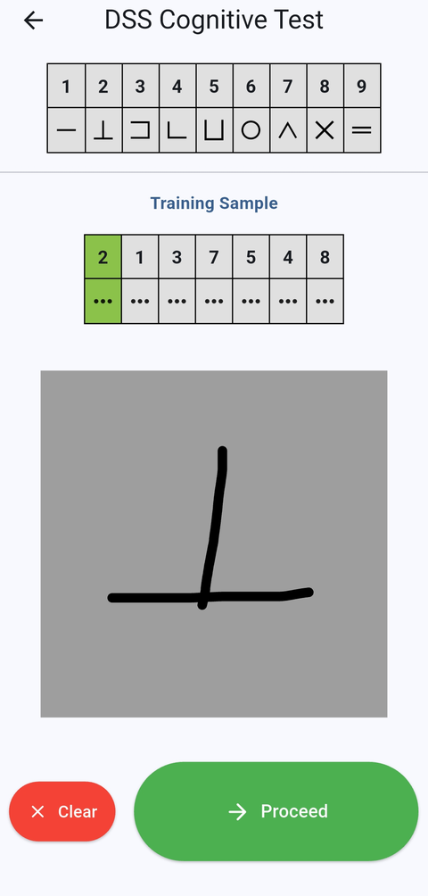

אנחנו רואים בסוכרת מצב שמאיץ את ההזדקנות. ירידה קוגניטיבית ואובדן תפקוד גופני הם סיבוכים של סוכרת, וכמו סיבוכים אחרים אפשר לאתר אותם מוקדם ולמנוע אותם. הטיפול צריך להתאים ליכולת הגופנית והקוגניטיבית של האדם, ולא לגילו, ולשם כך נדרשים כלי מדידה שמתאימים לשגרת הטיפול.
המחקר שלנו הוא חלק מהמרכז להזדקנות מוצלחת עם סוכרת במרכז הרפואי שיבא, המשלב טיפול קליני במרפאת ״סוכרת 360״ לבני 60 ומעלה, הכשרה ומחקר.
-
תפקוד קוגניטיבי
חשיבה וזיכרון משפיעים על האופן שבו אנשים מנהלים את הסוכרת מיום ליום. אנחנו מפתחים כלים למדידת תפקוד קוגניטיבי שמעשיים במרפאה ורגישים לשינוי לאורך זמן, ובהם גרסה דיגיטלית של מבחן החלפת סמלים בספרות, מבחן קצר של מהירות עיבוד.
-
שבריריות
אנחנו בוחנים שבריריות דרך היכולת הגופנית: כוח, כושר ושיווי משקל. אנחנו מודדים תנועה יומיומית בעזרת חיישנים לבישים, מפתחים שיטות של למידת מכונה לזיהוי מוקדם יותר של אנשים בסיכון, ובודקים אם פעילות גופנית ותזונה יכולות לסייע בשמירה על השריר.
-
טכנולוגיות סוכרת
אנחנו חוקרים איך מבוגרים משתמשים בטכנולוגיות סוכרת, כמו מערכות למתן אינסולין אוטומטי, ואיך השימוש בהן קשור לתפקוד הקוגניטיבי והגופני.
איך אנחנו מודדים
פיתחנו את 6 Vital, פלטפורמה משלנו לניהול מחקרים ולמדידה מחוץ למרפאה. אפליקציה בטלפון מתעדת תנועה באמצעות חיישני הטלפון ומפעילה את הגרסה הדיגיטלית שלנו למבחן החלפת סמלים בספרות, כך שאפשר לעקוב אחר המשתתפים מרחוק, במהירות ובמעט זמן צוות. יחד עם שותפים, אנחנו מפתחים מודלים של למידת מכונה לניתוח הנתונים מהאפליקציה. המטרה שלנו היא הערכה מהירה, זולה ומדויקת מספיק כדי לתמוך באיתור ובהתערבות מוקדמים, בלי להוסיף עומס על שירותי בריאות עמוסים ממילא. 6-vital.com
